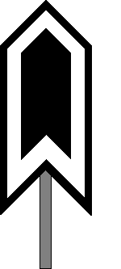
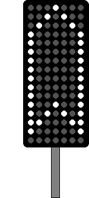

BeschreibungFormsignal:
Ein weißer Pfeil mit der Spitze nach oben auf pfeilförmiger, schwarzer Tafel.
Lichtsignal:
Ein weißleuchtender Pfeil mit der Spitze nach oben.


(3)
Geltung
Das Signal Zs 10 gilt nur für Zugfahrten, die durch Fahrtstellung eines Hauptsignals zugelassen worden sind und zeigt an, dass eine mit Signal Hp 2 oder Signal Zs 3 vorgeschriebene Geschwindigkeitsbeschränkung bereits vor dem Ende des anschließenden Weichenbereichs aufgehoben ist.
(4)
Eigenschaft
Das Formsignal ist rückstrahlend.
(5)
Mehrere Signale
Innerhalb eines anschließenden Weichenbereichs können mehrere Signale Zs 10 für verschiedene Fahrwege aufgestellt sein.
(6)
Verweis zum Fachthema "anschließender Weichenbereich"
Anschließender Weichenbereich
Informationen und Beispiele zum Verhalten im anschließenden Weichenbereich.